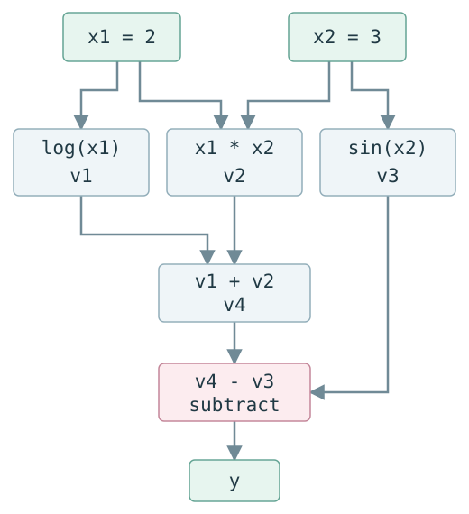

Autograd 源码学习（一）：自动微分与计算图
会用链式法则，并不意味着已经知道一段 Python 程序如何得到梯度。计算图把这个过程拆成了可以逐步检查的局部操作：先算出值，再沿依赖反向传回贡献。
我们从 log(x1) + x1*x2 - sin(x2) 开始，把手算、程序中的中间值和 Autograd 的入口放在一起。读完这一篇，再去看 Box 和 VJPNode，就能分清它们服务的是哪一步数学运算。
源码基线：HIPS/autograd 1.9.1，commit f53a21734fdfae636f448744d9097d8d35a643a0。
本文目标
- 数值微分、符号微分和自动微分的本质区别是什么？
- computational graph 如何把一个复合函数拆成局部操作？
- forward evaluation 与 reverse evaluation 分别在做什么？
- 为什么 reverse mode 只需反复计算“upstream gradient × local derivative”？
- 当前 HIPS/autograd 源码中的最小对应关系是什么？
Mental Model
自动微分不是用很小的步长猜导数，也不是先生成一条庞大的符号导数公式。它让原函数按正常程序执行，同时把每个已知 primitive 的局部导数按链式法则组合起来。
可以把一次求导分成三个层次：
| 层次 | 本文中的对象 | 不要混淆成 |
|---|---|---|
| Level 1：数学 | dy/dx1, dy/dx2 |
Python 对象 |
| Level 2：AD 抽象算法 | operation、edge、adjoint、局部传播、路径汇合 | 完整符号公式 |
| Level 3：HIPS/autograd 实现 | grad, trace, Box, VJPNode, primitive VJP rule |
数学导数本身 |
本文最重要的一句话：reverse mode 不会神奇地推导完整公式；它从输出的 adjoint 1 出发，把上游梯度乘以每个 operation 的局部导数，并在同一变量的多条路径汇合时相加。
必要的数学
下面的公式概括本篇使用的数学关系，具体数值与传播步骤接着展开。
研究函数：
A. Numerical differentiation
固定另一个输入，用 central difference 近似偏导：
它只通过函数值估计斜率。优点是可作为独立的 gradient check；局限是每个输入方向都要额外求值，而且 h 过大有截断误差、过小有浮点消减误差。
B. Symbolic differentiation
符号规则直接变换表达式，得到：
结果是新的数学表达式。这对小函数很直观，但它与“运行原 Python 程序并在运行时记录局部操作”不是同一机制。
C. Automatic differentiation
AD 把复合函数分解为 primitives，对每一步使用精确的局部导数，再由链式法则组合。这里的“精确”是相对于 finite difference 而言：最终仍使用浮点运算，但没有用有限差分近似导数。
一个最小例子
令 x1 = 2, x2 = 3，把表达式写成中间变量：
Computational graph

subtract 的第二条边带有局部导数 -1。图中 x1 和 x2 都通过多条路径影响 y，因此反向时会出现 contribution accumulation。
Forward evaluation trace
| 步骤 | 计算 | 数值 |
|---|---|---|
v1 |
log(2) |
0.693147180560 |
v2 |
2 * 3 |
6.000000000000 |
v3 |
sin(3) |
0.141120008060 |
v4 |
v1 + v2 |
6.693147180560 |
y |
v4 - v3 |
6.552027172500 |
Reverse evaluation trace
记 bar(v) = dy/dv，它也叫 adjoint、cotangent 或当前变量收到的 upstream gradient。
| 从哪个 operation 反传 | upstream | local derivative | contribution |
|---|---|---|---|
y = v4 - v3 到 v4 |
1 |
1 |
bar(v4)=1 |
y = v4 - v3 到 v3 |
1 |
-1 |
bar(v3)=-1 |
v4 = v1 + v2 到 v1 |
1 |
1 |
bar(v1)=1 |
v4 = v1 + v2 到 v2 |
1 |
1 |
bar(v2)=1 |
v1 = log(x1) 到 x1 |
1 |
1/x1=0.5 |
0.5 |
v2 = x1*x2 到 x1 |
1 |
x2=3 |
3 |
v2 = x1*x2 到 x2 |
1 |
x1=2 |
2 |
v3 = sin(x2) 到 x2 |
-1 |
cos(3)≈-0.9899925 |
≈0.9899925 |
汇合后：
这就是 multiple pathway case：每条路径产生 partial adjoint，同一变量收到的 partial adjoints 必须求和。
对应的 Autograd 源码
以下位置均对应本系列固定的源码 commit：
| File | Symbol | Responsibility |
|---|---|---|
autograd/__init__.py |
grad re-export |
用户可以写 from autograd import grad。 |
autograd/differential_operators.py |
grad（约 24 行） |
为 scalar-output 函数建立 VJP，并用 output cotangent ones() 启动反向传播。 |
autograd/wrap_util.py |
unary_to_nary |
让 grad(f, 0) / grad(f, 1) 能选择多参数函数中的一个输入。 |
autograd/tracer.py |
trace（约 14 行） |
给被求导输入创建 Box 后，真实执行用户函数。 |
autograd/tracer.py |
primitive（约 44 行） |
Box 参与运算时执行底层值计算，并为该 operation 建 node。 |
autograd/tracer.py |
Box（约 157 行） |
关联 _value、_trace、_node。私有字段细节留到 tracing 课程。 |
autograd/numpy/numpy_wrapper.py |
wrap_namespace |
把 NumPy namespace 中合适的 callables 包装为 Autograd primitives。 |
autograd/numpy/numpy_boxes.py |
ArrayBox |
把 +, -, * 等转发到 anp.add/subtract/multiply。 |
autograd/numpy/numpy_vjps.py |
defvjp(anp.multiply/log/sin, ...) |
注册本例所需的局部 reverse rules。 |
autograd/core.py |
VJPNode, backward_pass |
保存局部 VJP/parents，并按图反向传播；逐行机制属于后续文章。 |
调用时序
当前源码的 happy path 可以先压缩成：
from autograd import grad
-> differential_operators.py :: grad（由 unary_to_nary 包装）
-> core.py :: make_vjp
-> tracer.py :: trace
-> Box 穿过 np.log / multiply / np.sin / add / subtract primitives
-> core.py :: VJPNode 为 traced operations 保存 parents 与局部 VJP
-> core.py :: backward_pass
-> 对选定输入返回 gradient
这是调用链路标，不是本文要背的实现细节。后续 grad() 调用链课会逐对象验证 value、Box、node、parents 和 g。
源码 walkthrough
先把数学中的“输出 adjoint 设为 1”接到真实入口。下面完整保留 scalar 检查，避免把摘掉判断后的两行误认为原函数。
[REAL SOURCE]
File: autograd/differential_operators.py
Symbol: grad
Commit: f53a21734fdfae636f448744d9097d8d35a643a0
@unary_to_nary
def grad(fun, x):
"""
Returns a function which computes the gradient of `fun` with respect to
positional argument number `argnum`. The returned function takes the same
arguments as `fun`, but returns the gradient instead. The function `fun`
should be scalar-valued. The gradient has the same type as the argument."""
vjp, ans = _make_vjp(fun, x)
if not vspace(ans).size == 1:
raise TypeError(
"Grad only applies to real scalar-output functions. "
"Try jacobian, elementwise_grad or holomorphic_grad."
)
return vjp(vspace(ans).ones())
进入函数体时，fun 已被适配为只改变选定参数的一元函数，x 是该参数的本次数值。_make_vjp 执行它，产生普通输出 ans 与可调用的 vjp；vspace(ans) 描述输出允许使用的 cotangent 形状和数值类型。最后一行把输出空间里的全 1 值交给 vjp，下一步才进入 reverse traversal。这里不是把每个中间节点的梯度都设为 1。
在本文主表达式上，ans=6.552027172500；对 grad(f, 0)，返回的是 3.5，对 grad(f, 1)，返回的是 2.989992496600。两次调用分别选定一个输入，并各做一次 trace。make_vjp 为什么返回 closure，下一篇就会完整展开。
现在把手算中的两个局部导数接到注册规则。
[REAL SOURCE]
File: autograd/numpy/numpy_vjps.py
Symbol: defvjp(anp.log, ...)
Commit: f53a21734fdfae636f448744d9097d8d35a643a0
模块导入时，defvjp 收到 primitive 和一个 maker，并把规则登记起来。forward 真正执行 log(x) 后，maker 才收到本次 ans,x，产生捕获 x 的内层函数。backward 交来 g=dy/dv1=1 时，内层算 1/2=0.5，交给通用 reverse engine 累加到输入。它对应手算表的 log 路径。
[REAL SOURCE]
File: autograd/numpy/numpy_vjps.py
Symbol: defvjp(anp.sin, ...)
Commit: f53a21734fdfae636f448744d9097d8d35a643a0
本次 sin 的输入是 x2=3，它的输出在最后被减去，所以传进内层的 g=-1。内层调用可微 anp.cos，返回 -cos(3)，而不是直接返回 cos(3)。reverse engine 将它与 multiply 路径的 2 相加。规则没有生成完整 dy/dx2，只完成一个局部 pullback。同一文件中的 multiply 规则还包了 unbroadcast_f 处理数组 shape，第六篇和第七篇再展开。
实验验证
完整实验：lesson01_ad_and_graph.py。运行环境、资源目录及路径配置见系列总览。下方命令以解压后的资源目录为工作目录。
[EXPERIMENT]
File: experiments/lesson01_ad_and_graph.py
Purpose: 用同一个主表达式比较解析偏导、Autograd 与中心差分。
这就是实验真实执行的函数；进入时 x1,x2 可以是普通数，也可以由 grad 把选定参数替换成 Box。它产生 scalar loss，之后实验分别调用两个 grad 包装器。下面的手算和数值检查都围绕这一个函数。
它在 x1=2, x2=3 时同时计算：
- 手工 forward intermediates；
- 符号公式得到的两个偏导；
- Autograd 的
grad(f, 0)和grad(f, 1)； - central difference 数值近似；
- 三者的一致性断言。
运行命令：
原实验数值记录如下；导入路径已用 <checkout> 代替机器相关的前缀：
autograd imported from: <checkout>/autograd/__init__.py
forward: v1=0.693147180560, v2=6.000000000000, v3=0.141120008060, v4=6.693147180560
y=6.552027172500
symbolic=(3.500000000000, 2.989992496600)
autograd=(3.500000000000, 2.989992496600)
numerical=(3.500000000045, 2.989992496705)
all checks passed
这同时验证了实验导入的是本地 editable 源码。
理论与源码的对应关系
| 理论 / AD 抽象 | 当前实现中的对应物 |
|---|---|
| 原函数 forward evaluation | tracer.py :: trace 内真实调用 fun(start_box) |
| primitive operation | tracer.py :: primitive 包装的 callable |
| 运行值 | Box._value（实现细节，非用户 API） |
| computational graph edge | node 的 parents 引用关系 |
| local reverse rule | numpy_vjps.py 通过 defvjp 注册的 closure |
| adjoint / upstream gradient | 局部 VJP closure 接收的 g |
| output adjoint = 1 | grad 调用 vjp(vspace(ans).ones()) |
| reverse topological traversal | core.py :: backward_pass 使用 util.py :: toposort |
| multiple-path accumulation | core.py :: backward_pass 配合 add_outgrads；后续课实际观察两个 contribution |
几个自测问题
- 数值微分和自动微分都运行原函数；两者获得导数信息的方式有什么根本区别？
- 对
y = log(x1) + x1*x2 - sin(x2)，x2到y有哪两条路径？两条 contribution 各是多少？ - 为什么 reverse mode 可以只保存/调用局部 VJP，而不必先构造完整的符号导数公式？
- 源码里的
g对应 Level 1 数学中的什么量？为什么sin的局部规则写成g * cos(x)？ - “
VJPNode就是导数”这句话哪里不准确？请按数学、AD 抽象、Python 实现三个层次重新表达。
小结
自动微分复用已知 primitive 的局部导数，通过链式法则组合它们。计算图记录依赖，反向传播在共享输入处累加 contribution；数值微分则提供独立的近似核对。
下一篇
参考资料
- autograd/differential_operators.py，固定 commit 原文件。
- autograd/numpy/numpy_vjps.py，固定 commit 原文件。
- Automatic Differentiation lecture。